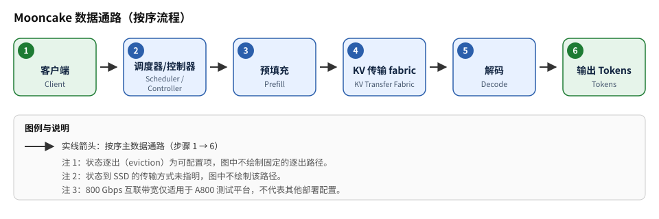

页内目录（点击展开/折叠）
Mooncake：以 KVCache 为中心的 Prefill/Decode 分离式 LLM 服务架构
一句话判断
对「长上下文、高前缀共享、过载频繁」的大规模在线 LLM 服务，Mooncake 把 KVCache 当成一等公民：Prefill 与 Decode 分池部署、全局调度器统一编排、过载时早期拒绝，在论文口径下以相同机器预算换取 20%–525% 不等的吞吐提升与更高的 SLO 达成率；代价是跨节点 KV 传输带宽依赖、控制面复杂度，以及「集中缓存 + 跨请求复用」带来的隔离与合规新问题。全部数字为论文条件性结果，且核验范围内无官方代码仓库声明。P I（代价与适用面判断为编辑观点）
3 分钟速读
- 架构：图 1（PDF 第 2 页）给出整体形态——以 KVCache 为中心的分离式集群：全局调度器（Conductor）前置编排，Prefill 与 Decode 节点各自池化，两阶段之间通过 KVCache 的传输与复用衔接，并与全局 KVCache 缓存层协同。P
- 动机：图 3–图 4（PDF 第 5–6 页）展示以 KVCache 为中心的调度与并发控制——基于前缀块的 KVCache 复用、跨请求/跨节点的缓存块映射与一致性处理；摘要文件同时以该门控记录负载统计：请求长度分布不均、可复用共享前缀多、长输入短输出占比高。P
- 调度：PDF 第 9–11 页给出 CPP 与 KVCache 感知调度——结合缓存命中与负载估计决定请求接纳与 Prefill/Decode 节点放置，过载时进行准入控制；第 13–14 页补充早期拒绝：预计无法满足 SLO 的请求尽早拒绝，保护已接纳请求。P
- 结果：相同 4 机预算下 [3P+1D] 较 vLLM [4M] 吞吐 +20%/+40%（第 15 页）；长上下文（输入 16k–128k、输出 512、命中率约 50%）+50%–525%（第 16 页）；过载回放 [10P+10D] 较 [20M] 多处理约 75% 请求（SLO：TTFT 30s、TBT 0.1s/token，第 17 页）。P
- 边界：数字全部为条件性结果，禁止跨论文横比；核验到的 SLO 口径偏宽松（TTFT 30 秒）；无已核验代码仓库；安全、成本、多租户议题论文未涉及，均为编辑推断。P I
论文声称的主要结果
| 指标（口径） | 数字 | 系统配置 | 完整条件 | 来源 |
|---|---|---|---|---|
| 基础对比吞吐提升 | 约 20% / 40% | Mooncake [3P+1D] vs vLLM [4M] | 相同 4 机预算（3 Prefill + 1 Decode 对 4 台整体式机器，共四实例/4 机对比）；对应论文两种实验设定；第 15 页披露实验使用 LLaMA2-70B 同质 dummy 模型、A800-SXM4-80GB 节点（每实例 8 GPU）与实例间 800 Gbps RDMA 互联（精度 dtype 论文未明示，本页不臆测） | P 第 15 页（台账 P06） |
| 长上下文吞吐提升 | 50%–525% | Mooncake 分离配置（第 16 页 §8.1.2 沿用 §8.1.1 相同配置） | 长上下文场景：输入 prompt 16k–128k token，输出固定 512 token，KVCache 命中率约 50% | P 第 16 页（台账 P07） |
| 过载场景请求处理量提升 | 约 75% | Mooncake [10P+10D] vs [20M] | 真实生产 trace 回放、过载场景；SLO 约束 TTFT 30 秒、TBT 0.1 秒/token；20 台整体式机器对照 10 Prefill + 10 Decode | P 第 17 页（台账 P08） |
| 早期拒绝被拒请求数（三种设置） | 4183 / 3771 / 3589 | Mooncake [8P+8D] | 约 2.3 万条请求的生产 trace 以 2 倍速率回放；三种设置下分别对应上述被拒数量（其余条件见 实验与指标） | P 第 17 页（台账 P09） |
术语与记号
- P / D / M
- Prefill 节点 / Decode 节点 / 整体式（Monolithic）机器；配置记号 [3P+1D] 即 3 台 Prefill + 1 台 Decode，[4M] 即 4 台整体式机器。
- TTFT
- Time To First Token，首 token 时间。
- TBT
- Time Between Tokens，相邻 token 间隔时间。
- 论文出处
- 《Mooncake: A KVCache-centric Disaggregated Architecture for LLM Serving》，USENIX FAST '25（取自证据台账）；本地文件 03_Mooncake_2407.00079.pdf。
问题背景
整体式架构的结构性矛盾
LLM 推理的 prefill（并行处理整个 prompt、计算受限）与 decode（每迭代每请求只处理 1 个 token、内存受限）两阶段资源画像差异显著，整体式（monolithic）部署中二者混布互相干扰——prefill 长任务拖累运行中请求的 decode 延迟，decode 小批量又浪费算力。这一通识性动机在 Mooncake 论文中展开于引言与动机章节，但该部分不在本次核验门控范围内，本站按编辑通识转述，细节以论文原文为准。I
生产负载特征（论文核验门控内）
图 3–图 4（PDF 第 5–6 页）展示以 KVCache 为中心的调度与并发控制：基于前缀块的 KVCache 复用、跨请求/跨节点的缓存块映射与一致性处理。P 摘要文件同时以该门控记录负载统计：基于生产 trace 的请求长度分布不均、存在大量可复用的共享前缀、长输入短输出占比高——这构成以 KVCache 为核心进行调度与缓存管理的设计动机。P（两个来源对图 3–4 的侧重不同，本页并列呈现，不强行合并。）
评估数据：真实生产 trace
PDF 第 7–8 页描述用于评估的真实生产 trace：请求含长前缀、负载随时间波动；后续 trace 驱动仿真实验（含 2 倍速率回放）均基于该数据集，在可控配置下比较不同调度与缓存策略的吞吐和延迟表现。P
本页使用的延迟指标
与全站一致，本页以 TTFT（首 token 时间）与 TBT（token 间隔时间）讨论延迟；Mooncake 论文在过载回放实验中给出显式 SLO 数值——TTFT 30 秒、TBT 0.1 秒/token（第 17 页）。P 指标名词解释为站内通识口径。I
核心机制
1 · 以 KVCache 为中心的分离式架构（Fig.1，PDF 第 2 页）
Mooncake 将请求的 Prefill 与 Decode 阶段部署到不同的 GPU 节点池，中间通过 KVCache 的传输与复用衔接，并由全局调度器（Conductor）统一编排请求调度与缓存资源，整体与全局 KVCache 缓存层协同。KVCache 从「每张卡顺带维护的状态」升级为跨节点调度与复用的中心资源——这是「KVCache 为中心（KVCache-centric）」的含义。P
2 · 前缀块复用与跨节点缓存一致性（Figs.3–4，PDF 第 5–6 页）
以 KVCache 为中心的调度与并发控制落在两件事上：其一是基于前缀块的 KVCache 复用——相同前缀（如系统提示词、模板化任务头）的 KV 只需计算/传输一次，可跨请求复用；其二是跨请求/跨节点的缓存块映射与一致性处理——缓存块在不同请求与不同节点之间建立映射，并处理一致性。P
3 · CPP 与 KVCache 感知调度（PDF 第 9–11 页）
- 调度与放置：结合缓存命中情况与负载估计做请求调度与放置，决定「是否接纳」与「落到哪个 Prefill / Decode 节点」——摘要文件转述为按前缀/缓存亲和性选择节点，并结合缓存热度进行复制与淘汰。P
- 准入控制：过载时进行准入控制，避免新请求无限进入拖垮全体延迟。P
- 关于 CPP 的名称：CPP 即 chunked pipeline parallelism（分块流水线并行），术语见 PDF 第 9 页；本页 CPP 相关调度描述仍以第 9–11 页门控为准。P
4 · 早期拒绝（early rejection，PDF 第 13–14 页）
过载场景下，对预计无法满足 SLO 的请求尽早拒绝，避免其长期占用 Prefill/Decode 资源，从而保障已接纳请求的 TTFT 与 TBT，以及整体集群的 SLO 达成率。P 直觉上，这是把过载从「全体一起变慢、尾部延迟爆炸」改写为「部分请求被明确拒绝、其余请求守住 SLO」——该定性概括为编辑观点。I 量化结果（被拒请求数 4183/3771/3589）见 实验与指标。
GPU / 系统数据路径

端到端文字序列
- ① 请求进入：客户端请求到达前置的全局调度器/控制器（Conductor）。P Fig.1（第 2 页）
- ② 调度与准入：调度器结合缓存命中与负载估计做调度/放置，决定请求接纳与 Prefill/Decode 节点分配（第 9–11 页）；预计无法满足 SLO 的请求在此被尽早拒绝（第 13–14 页）。P
- ③ Prefill 计算：Prefill 节点并行处理 prompt、产出 KV 缓存（Fig.1，第 2 页）；基于前缀块的复用使共享前缀不必重算（第 5–6 页）。P
- ④ KV 传输：KV 缓存经 KV 传输 fabric 从 Prefill 侧转移到 Decode 侧（Fig.1，第 2 页：两阶段通过 KVCache 的传输与复用衔接）；跨节点带宽是这一段的硬约束——论文第 15 页披露 A800 测试平台实例间为 800 Gbps RDMA 互联，不代表其他部署。P I（带宽约束的部署含义为编辑推断）
- ⑤ Decode 计算：Decode 节点基于传输到的 KV 做增量解码，逐 token 生成。P Fig.1（第 2 页）
- ⑥ 流式返回：输出 Tokens 流式回传客户端；TTFT 对应第 ③→⑥ 段的首 token 到达，TBT 对应其后相邻 token 间隔——第 17 页实验即以 TTFT 30s、TBT 0.1s/token 为 SLO 口径。P
| 组件 | 面 | 职责 | 证据 |
|---|---|---|---|
| 全局调度器（Conductor） | 控制面 | 全局编排、缓存感知调度/放置、准入控制 | P Fig.1（第 2 页）、第 9–11 页 |
| 早期拒绝策略（调度器内） | 控制面 | SLO 不可达请求尽早拒绝，保护已接纳请求 | P 第 13–14 页 |
| Prefill 节点池 | 数据面 | prompt 并行处理、产出 KV 缓存 | P Fig.1（第 2 页） |
| KV 传输 fabric / 全局 KVCache 层 | 数据面 | 跨节点 KV 传输与复用；前缀块映射与一致性 | P Fig.1（第 2 页）、第 5–6 页 |
| Decode 节点池 | 数据面 | 增量解码、token 流式输出 | P Fig.1（第 2 页） |
| trace 驱动仿真（评估面） | 评估 | 生产 trace 回放（含 2 倍速）评估调度与缓存策略 | P 第 7–8 页 |
架构权衡
分离收益 ↔ 同预算机器数
相同 4 机预算下 [3P+1D] 较 vLLM [4M] 吞吐 +20%/40%（第 15 页），说明分离的收益不是「加机器」而是「同预算重排」；但分池 + KV 传输 fabric 要求实例间高带宽网络与双池运维，部署门槛高于整体式。P I
缓存命中 ↔ 收益幅度
长上下文 +50%–525% 的前提是 KVCache 命中率约 50%（第 16 页）——命中率是第一敏感项：共享前缀多、复用高的负载吃满机制红利，随机长尾 prompt 的负载收益会缩水（后一半为编辑推断，论文未在核验门控内给出低命中率对照）。P I
过载容量 ↔ 拒绝率
过载回放中 [10P+10D] 较 [20M] 多处理约 75% 请求（第 17 页），但整体系统以「拒绝部分请求」为代价——[8P+8D]、23k trace@2x 下三种设置分别拒绝 4183/3771/3589 条（第 17 页）。早拒绝换 SLO 达成，业务方必须接受这一语义。P I
全局优化 ↔ 控制面复杂度
Conductor 全局编排带来跨池优化空间（缓存亲和、负载均衡、准入一体决策），但控制面自身成为新的关键组件；论文未讨论其高可用与扩展性，云上落地需部署方自行补齐。P（架构存在性） I（HA 缺口与建议）
集中 KVCache ↔ 隔离合规
KV 张量跨节点存储与传输、前缀块跨请求复用，意味着注意力中间状态离开了单卡边界：云上部署需配套传输加密、租户隔离与缓存清理策略；跨请求共享缓存的隔离粒度须结合业务合规另行评估。论文未涉及安全与隐私议题。I
SLO 证据 ↔ 口径宽度
核验到的显式 SLO 为 TTFT 30 秒、TBT 0.1 秒/token（第 17 页）——对交互式服务偏宽松；更紧 SLO（亚秒级 TTFT）下 Mooncake 的行为不在核验门控内，不能由本页数字外推。P I
云上部署映射
| 维度 | 论文配置（P） | 云上映射（E/I，示例非推荐） | 说明 |
|---|---|---|---|
| 部署形态 | Prefill 与 Decode 分池 + 全局 KVCache 层 + Conductor 全局调度 P（Fig.1，第 2 页） | 两组独立 GPU 实例池（Prefill 池、Decode 池）+ 缓存/网络层 + 独立部署的调度控制面 E | 两池按各自负载独立伸缩（P 池吃长度分布、D 池吃输出长度与并发） I |
| 实例间网络 | KV 传输 fabric 为必经数据通路；论文第 15 页披露 A800-SXM4-80GB 测试平台（每实例 8 GPU）800 Gbps RDMA 互联（不代表其他部署）P | 同可用区内选高带宽、低延迟实例间网络（如 RDMA 族实例）；带宽按 KV 传输峰值规划 E | 带宽不足直接压缩分离收益与可行 P:D 比例 I |
| 控制面 | Conductor 全局调度器（缓存命中 + 负载估计 + 准入控制，第 9–11 页）P | 独立的无状态调度服务 + 高可用部署；其 HA/多活方式论文未讨论，属部署方设计 I | 控制面是全集群关键路径，故障域大于单实例 |
| 缓存层 | 全局 KVCache 层：前缀块复用、跨请求/跨节点映射与一致性（第 5–6 页）；逐出为可配置项（本站图注）P | 缓存层容量、逐出与复制策略按命中率目标（论文口径约 50%）调优 I | 命中率决定收益上限，需作为一等指标监控 |
| 弹性 / 过载 | 过载准入控制 + 早期拒绝（第 9–11、13–14 页）P | 与云上配额、限流、熔断联动：拒绝率阈值对外暴露为降级信号 I | 被拒请求需有客户端重试/排队/降级路径 |
| 可观测 | SLO 口径：TTFT 30s、TBT 0.1s/token（第 17 页）P | 指标面：SLO 达成率、拒绝率、KVCache 命中率、TTFT/TBT 分位、P/D 池水位 I | 论文未给运维指标体系，以上为部署建议 |
成本 / 性能 / SLO
SLO 与实验口径（论文定义）
| 实验 | SLO / 关键条件 | 系统配置 | 结果 | 来源 |
|---|---|---|---|---|
| 基础对比（第 15 页） | 门控内未记录显式 SLO 数值；相同 4 机预算、两种实验设定 | Mooncake [3P+1D] vs vLLM [4M] | +20% / +40% | P P06 |
| 长上下文（第 16 页） | 输入 16k–128k token；输出固定 512 token；KVCache 命中率约 50% | Mooncake 分离配置（§8.1.2 与 §8.1.1 同配置，第 16 页） | +50%–525% | P P07 |
| 过载 trace 回放（第 17 页） | 真实 trace 回放、过载场景；SLO：TTFT 30 秒、TBT 0.1 秒/token | Mooncake [10P+10D] vs [20M] | 约 +75% 请求 | P P08 |
| 早期拒绝量化（第 17 页） | [8P+8D]；约 2.3 万条 trace、2 倍速回放；三种设置 | Mooncake [8P+8D] | 拒绝 4183/3771/3589 | P P09 |
容量规划变量
- KVCache 命中率：决定复用收益（论文口径 50% 对应 50%–525% 提升，第 16 页）——前缀共享度是第一变量；P
- P:D 池比例：论文覆盖 [3P+1D]、[8P+8D]、[10P+10D] 等配置，比例是容量与成本的一级旋钮；P
- 拒绝率：过载下有效处理量 = 到达量 − 被拒量，早拒绝阈值直接决定对外语义；P I
- 跨节点带宽：KV 传输 fabric 的可行域约束（论文第 15 页披露 A800 平台 800 Gbps RDMA）。P I
成本模型（参数化，非论文结论）
论文不含任何成本数据（仅吞吐/SLO/拒绝率）。架构师可用下式估算（I，价格项为参数）：
每百万请求成本 ≈ ( p_gpu × (N_P + N_D) + p_net ) ÷ R_adm × 10⁶ …（公式 1）
- p_gpu：单卡时租价（按查询日云价代入，E）；
- N_P / N_D：Prefill 池 / Decode 池卡数（如 [3P+1D]×每机卡数起步）；
- p_net：跨节点 KV 传输与缓存层折算成本（命中率低、带宽贵时不可忽略，I）；
- R_adm：SLO 内单位时间有效接纳并完成的请求数 ≈ 到达率 × (1 − 拒绝率)（I）。
敏感项：命中率上升 → R_adm 上升（第 16 页命中 50% 时 50%–525% 提升 P）；拒绝率上升 → R_adm 直接折损（第 17 页拒绝计数 P）；P:D 比例失衡 → 某一池闲置、单位成本上升（编辑推断 I）。
安全与可运维性
论文披露范围
- 核验门控内论文未涉及安全、隐私、多租户与故障恢复议题——以下部署要点均为编辑推断。I
- 无已核验代码仓库：核验范围内论文未给出可核验的官方仓库声明，证据台账刻意不含任何仓库/实现层声明（commit、release、目录结构等均未验证）。R
- 评估方法论为真实生产 trace 驱动仿真（含 2 倍速回放），非公开可复现的基准套件声明。P（第 7–8 页）
论文未披露、部署方必须自行覆盖的项
| 维度 | 论文状态 | 部署建议（I） |
|---|---|---|
| KV 传输加密 | 未涉及 I（缺口） | 注意力 KV 张量跨节点存储与传输，链路须启用传输加密（实例间 TLS/mTLS 或等效隔离网络） |
| 租户隔离 / 跨请求缓存共享 | 未涉及；前缀块跨请求复用为机制默认 I | 明确缓存共享的隔离粒度（按租户分域、默认不跨租户复用），并过合规评审——KV 含用户 prompt 衍生状态 |
| 缓存清理 / 残留 | 未涉及 I（缺口） | 请求结束后的 KV 逐出/清零策略成文；逐出为可配置项（本站图注），需审计配置而非假设默认安全 |
| 配额 / 限流联动 | 早拒绝在系统内部，未谈对外语义 P（第 13–14 页） | 拒绝率阈值与网关配额、限流、熔断联动；对被拒请求返回明确错误码与重试指引 |
| 监控告警 | 未披露指标体系 I（缺口） | 对 SLO 达成率（TTFT 30s / TBT 0.1s 口径可作起点）、拒绝率、命中率、P/D 池水位设告警 |
| 参数调优 | 未给生产 SOP I（缺口） | 拒绝率阈值、P:D 比例、缓存容量按实际负载在线调优；论文结论不能直接迁移到任意生产环境 |
| 供应链 / 部署来源 | 无已核验仓库 R | 勿从任何未经核验的「Mooncake 实现」仓库部署；如自行实现，按本页门控逐条对照论文行为 |
| 故障恢复 | 未披露 I（缺口） | 控制面（Conductor）按有状态关键服务做 HA；P/D 池与缓存层分别演练故障恢复 |
适用 / 不适用场景
适用（触发条件 → 理由）
- 长上下文生产负载：触发条件——输入在 16k–128k token 量级、输出数百 token。理由——论文在输入 16k–128k、输出 512、命中率约 50% 条件下实测吞吐 +50%–525%（第 16 页）。P
- 高共享前缀 / 高命中率业务：触发条件——系统提示词、模板化任务头等前缀大量复用（命中率可测且可观）。理由——前缀块 KVCache 复用与跨请求映射是机制核心（第 5–6 页），命中率正是论文收益数字的前提变量。P
- 过载频繁、重视 SLO 达成率的集群服务：触发条件——峰值到达量常态性超过容量、业务可接受部分拒绝。理由——过载回放中 [10P+10D] 较 [20M] 多处理约 75% 请求（TTFT 30s / TBT 0.1s/token，第 17 页），早拒绝保住已接纳请求的延迟（第 13–14 页）。P
- 两阶段负载不均衡、需独立伸缩的平台：触发条件——prefill 与 decode 峰值错位、扩容需求不同步。理由——P/D 天然分池，可各自伸缩；此为架构形态的直接推论。P（分池形态，第 2 页） I（伸缩收益判断）
不适用（触发条件 → 理由）
- 低缓存复用负载：触发条件——prompt 随机性强、共享前缀少、命中率远低于论文 50% 口径。理由——复用是收益主引擎，命中率坍塌则 50%–525% 的前提不成立（编辑按第 16 页条件反推，论文未测低命中率对照）。I
- 单机 / 小规模部署：触发条件——总计个位数 GPU、无实例间高带宽网络。理由——分离架构至少要求 P/D 两组节点 + KV 传输 fabric，小规模下额外网络与控制面成本压倒收益（编辑推断）。I
- 紧 TTFT SLO 的强交互服务：触发条件——首 token 延迟要求亚秒级。理由——论文核验到的显式 SLO 为 TTFT 30 秒 / TBT 0.1 秒/token（第 17 页），更紧 SLO 下的行为无核验证据，不能外推。P（证据边界） I
- 硬多租户隔离 / 强合规业务：触发条件——跨租户数据严格不可见、审计要求高。理由——前缀块跨请求复用与集中 KVCache 与硬隔离天然冲突，需关闭复用或分域部署，收益随之缩水（编辑推断，论文未涉安全议题）。I
- 带宽受限的存量集群：触发条件——实例间仅普通以太网、无扩带宽计划。理由——KV 传输 fabric 是必经数据通路，带宽不足直接限制可行配置（论文第 15 页披露 A800 测试平台实例间 800 Gbps RDMA 互联）。P I
实验与指标
复现实验的完整条件（论文核验门控内）
| 条件维度 | 论文口径 | 来源 |
|---|---|---|
| 负载数据 | 来自线上服务的真实生产 trace：请求含长前缀、负载随时间波动 | P 第 7–8 页（P03） |
| 评估方式 | trace 驱动仿真，在可控配置下比较不同调度与缓存策略的吞吐与延迟；含 2 倍速率回放 | P 第 7–8 页（P03）、第 17 页（P09） |
| SLO 设定 | TTFT 30 秒、TBT 0.1 秒/token（过载回放实验） | P 第 17 页（P08） |
| 长上下文设置 | 输入 prompt 16k–128k token；输出固定 512 token；KVCache 命中率约 50% | P 第 16 页（P07） |
| 系统配置口径 | [3P+1D] vs [4M]；[10P+10D] vs [20M]；[8P+8D]（记号见 术语表） | P 第 15、17 页 |
| 模型 / 精度 / 硬件明细 | 第 15 页披露：LLaMA2-70B 同质 dummy 模型；A800-SXM4-80GB 节点、每实例 8 GPU、共 4 台机器；实例间 800 Gbps RDMA 互联（不代表其他部署）。精度（dtype）论文未明示，本页不臆测 | P 第 15 页（P06） I（精度不臆测） |
关键结果（均带条件）
| 结论（指标） | 数字 | 完整条件 | 来源 |
|---|---|---|---|
| 分离配置基础吞吐提升 | 约 20% / 40% | Mooncake [3P+1D] vs vLLM [4M]；相同 4 机/四实例预算；两种实验设定；第 15 页披露 LLaMA2-70B 同质 dummy 模型、A800-SXM4-80GB（每实例 8 GPU）、800 Gbps RDMA | P 第 15 页（P06） |
| 长上下文吞吐提升 | 50%–525% | 输入 16k–128k token、输出 512 token、KVCache 命中率约 50%；第 16 页 §8.1.2 沿用 §8.1.1 相同配置 | P 第 16 页（P07） |
| 过载请求处理量提升 | 约 75% | [10P+10D] vs [20M]；真实生产 trace 回放、过载场景；SLO TTFT 30s、TBT 0.1s/token | P 第 17 页（P08） |
| 早期拒绝被拒请求数 | 4183 / 3771 / 3589 | [8P+8D]；约 2.3 万条请求 trace、2 倍速回放；三种设置分别对应三个数值 | P 第 17 页（P09） |
公平性限制与已知差异
- 全部数字为对门控页的转述；精确引用请回查 PDF 原文（摘要文件同此声明）。P I
- 页码口径：被拒请求数（4183/3771/3589）在证据台账与摘要文件中均定位于第 17 页（P09）；第 13–14 页门控仅覆盖早期拒绝机制描述，不含该计数。P
- 论文第 15 页已披露实验模型与测试平台：LLaMA2-70B 同质 dummy 模型、A800-SXM4-80GB 节点（每实例 8 GPU、共 4 台机器）、实例间 800 Gbps RDMA 互联；第 16 页 §8.1.2 沿用 §8.1.1 相同配置。精度（dtype）、trace 起止时间等细节门控页未明示，按「论文未明示」如实标注，本页不臆测。P（第 15–16 页）
- 数字不可与 DistServe、Sarathi-Serve 等其他论文横比（硬件、负载、SLO 口径均不同）。I
核对 / 复现路径
由于核验范围内不存在已核验的官方代码仓库（R 缺位），无法给出仓库级复现步骤；建议按 PDF 门控逐条核对：I（顺序为编辑建议）
- 以 Fig.1（第 2 页）核对整体架构与组件边界；
- 以第 7–8 页核对 trace 定义与 2 倍速回放口径；
- 以第 9–11 页核对 CPP/调度与准入控制描述（CPP 即 chunked pipeline parallelism，见第 9 页）；
- 以第 13–14 页核对早拒绝机制，再以第 15–17 页核对全部数字及其条件。
论文 / 链接 / 延伸阅读
| 资源 | 级别 | 链接 / 文件 |
|---|---|---|
| 论文：《Mooncake: A KVCache-centric Disaggregated Architecture for LLM Serving》（FAST '25） | P | 题名与出处取自证据台账；本地 03_Mooncake_2407.00079.pdf |
| arXiv 页面（本站编辑补充） | I | arxiv.org/abs/2407.00079（URL 为编辑补充，2026-09-14 未联网复核可用性；内容以本地 PDF 与台账门控为准） |
| 站内对照阅读 | 站内 | DistServe（01，disaggregated 路线） · Sarathi-Serve（02，单实例 chunked-prefill 路线） |
| 代码仓库 | R（缺位） | 无 —— 核验范围内论文未提供可核验的官方仓库声明（台账 repository_claims＝「无」）；本页刻意不提供任何仓库链接，凡声称「Mooncake 官方实现」的第三方仓库均未经本站核验 |
给架构师的决策清单
证据台账
| 编号 | 关键结论（摘要） | 级别 | 定位（PDF 页码 + 图号） | 核验状态 |
|---|---|---|---|---|
| P01 | 整体架构：以 KVCache 为中心的 P/D 分离集群，Conductor 全局调度器，节点池化并与全局 KVCache 层协同 | P | Fig.1，第 2 页 | 已核验（PDF 原页） |
| P02 | 以 KVCache 为中心的调度与并发控制：前缀块复用、跨请求/跨节点缓存块映射与一致性；摘要另记负载统计（长度不均、共享前缀多、长输入短输出） | P | 图 3–图 4，第 5–6 页 | 已核验（PDF 原页；两来源侧重不同，页面并列呈现） |
| P03 | 评估用真实生产 trace：长前缀、负载随时间波动；trace 驱动仿真含 2 倍速回放 | P | 第 7–8 页 | 已核验（PDF 原页） |
| P04 | CPP 与 KVCache 感知调度：缓存命中 + 负载估计的调度/放置，请求接纳与 P/D 节点分配；过载准入控制（CPP = chunked pipeline parallelism，第 9 页） | P | 第 9–11 页 | 已核验（PDF 原页） |
| P05 | 早期拒绝：估计无法满足 SLO 时尽早拒绝，避免占用 P/D 资源，保障整体 SLO 达成率 | P | 第 13–14 页 | 已核验（PDF 原页） |
| P06 | [3P+1D] vs vLLM [4M]：吞吐 +20%/+40%（相同四实例/4 机对比、两种实验设定；第 15 页披露 LLaMA2-70B 同质 dummy 模型、A800-SXM4-80GB 每实例 8 GPU、800 Gbps RDMA） | P | 第 15 页 | 已核验（PDF 原页） |
| P07 | 长上下文：吞吐 +50%–525%；输入 16k–128k、输出 512、命中率约 50% | P | 第 16 页 | 已核验（PDF 原页） |
| P08 | [10P+10D] vs [20M]：多处理约 75% 请求；SLO TTFT 30s、TBT 0.1s/token | P | 第 17 页 | 已核验（PDF 原页） |
| P09 | [8P+8D]、约 2.3 万条 trace、2 倍速回放：被拒请求数 4183/3771/3589（三种设置） | P | 第 17 页 | 已核验（PDF 原页；摘要文件同记 p17） |
| E-01 | 云上映射：P/D 双 GPU 实例池 + 缓存/网络层 + 调度控制面，两池独立伸缩（示例非推荐） | E | 论文侧依据见 P01/P08；云产品对应为各厂商公开实例目录（本次未联网核验） | 部分核验（论文事实为 PDF 原页；云映射未联网核验） |
| I01 | 云映射推断：分池独立伸缩；不确定性——实例间带宽/拓扑/AZ 约束、控制面 HA 论文未讨论 | I | —（编辑推断） | 编辑标注完成 |
| I02 | 成本推断：复用 + 早拒绝可望降低单位请求成本；论文无成本模型，无法由论文数据直接推出 | I | —（编辑推断） | 编辑标注完成 |
| I03 | 安全推断：KV 跨节点存储/传输需传输加密、租户隔离与缓存清理；跨请求共享粒度需合规评估；论文未涉及安全隐私 | I | —（编辑推断） | 编辑标注完成 |
| I04 | 运维推断：早拒绝与全局调度需与配额、限流、监控告警、容量规划协同；拒绝率阈值与 P:D 比例需在线调优；运维复杂度高于单体部署 | I | —（编辑推断） | 编辑标注完成 |